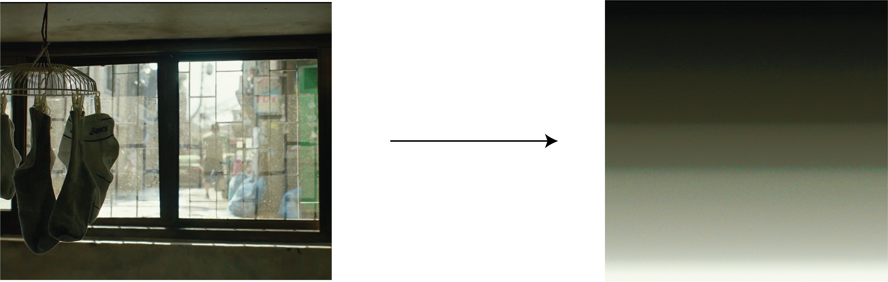

Overview
This thesis is about the design and development of FilmDecoder, an innovative platform designed to transform film viewing by integrating screenplay synchronization with with data visualization. This tool aims to make the complex interplay between screenplay text and visual elements accessible, enhancing viewer understanding of film theory and analysis. By merging quantitative analysis with an intuitive viewing experience, FilmDecoder reveals deeper insights into film narratives and production techniques. The platform enhances the appreciation of cinematic artistry by allowing viewers to explore films through enriched visual contexts, thereby making sophisticated film analysis accessible to a broader audience and enriching the film viewing experience.
Layout
The design of FilmDecoder's layout, encompassing the Film Content, Top Timeline Panel, On-Screen Annotation, and Bottom Timeline Panel, is driven by the aim to maximize the viewer's understanding of film elements. This layout is meticulously crafted to minimize cognitive load, facilitating a seamless comparison of various film elements.
Design Philosophy The integration of these distinct areas within the platform is guided by a philosophy of balance—leveraging the strengths of each component while mitigating potential drawbacks when used in isolation. The layout is thoughtfully arranged to support an intuitive flow of information, making complex film data accessible and engaging for users.
Top and Bottom Timeline Panels Serve as the primary conduits for presenting high-level information, enabling an overview and temporal tracking of film elements. These panels are designed to complement each other, offering a scaffolded approach to data interpretation.
On-Screen Annotation This feature is designed to bridge the high-level insights offered by the timeline panels with detailed, in-depth analysis. It aims to spotlight specific elements, drawing the viewer's attention to nuanced details and fostering a richer understanding of the film content.
Data Representation
Shot Length and Shot Type
Color

Camera Movement

Script